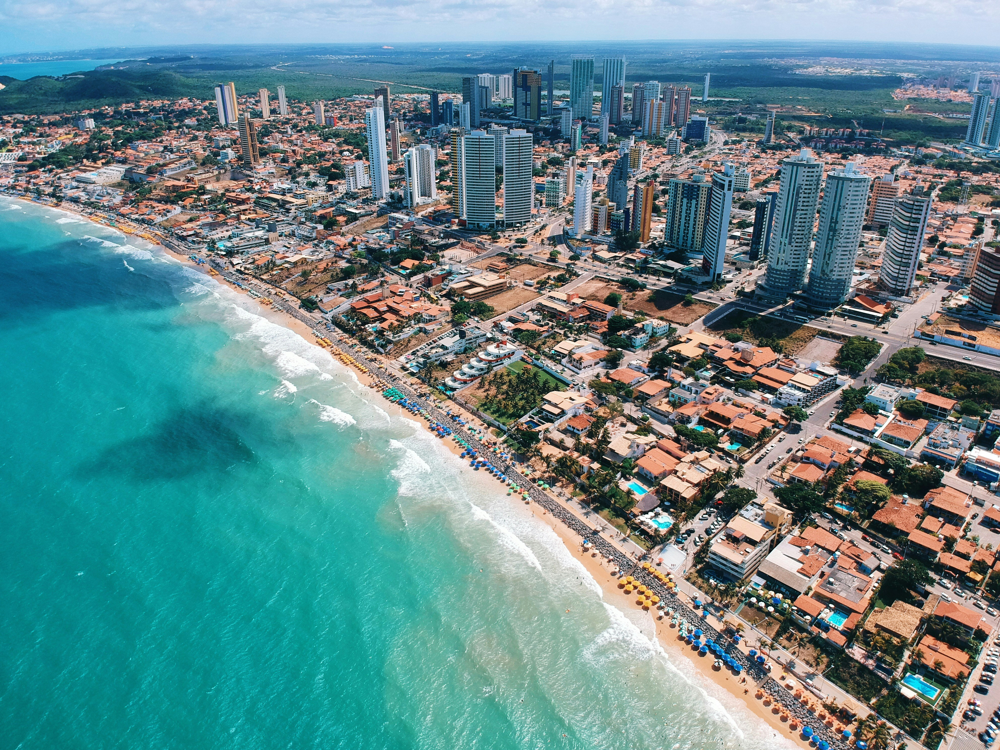
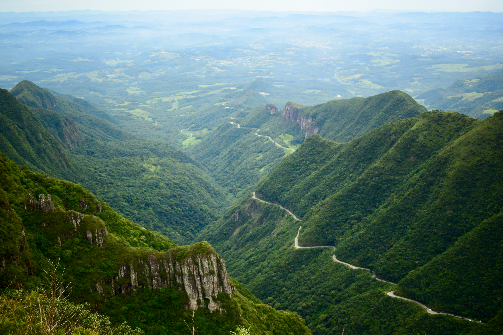
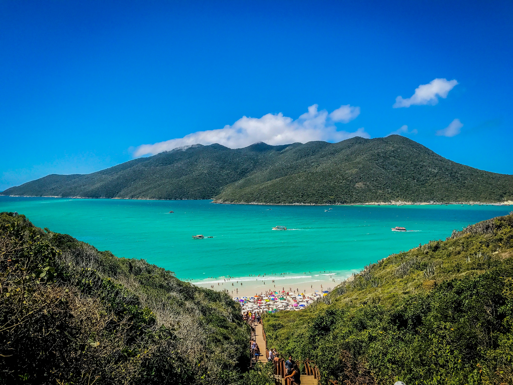
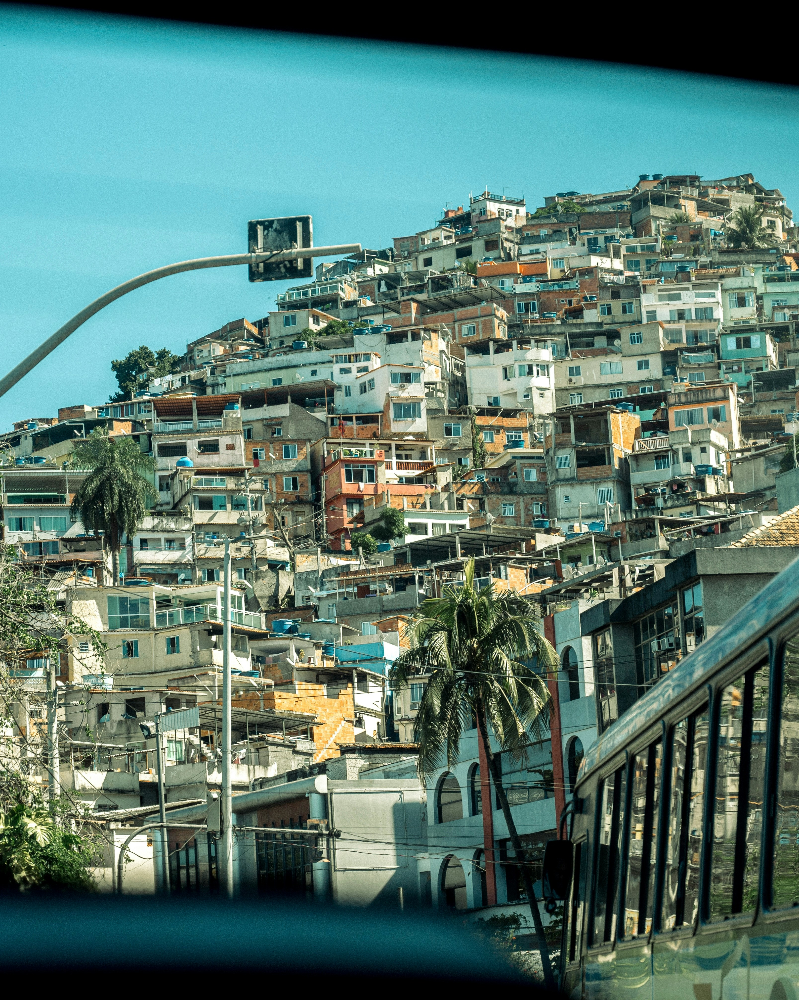

Brazil is a country of electric energy and immense natural scale. A land where
nature and culture collide with spectacular force, from the thunderous cascades of Iguazu Falls to the rhythmic
pulse of Rio de Janeiro. Whether you are navigating the vast, green mystery of the Amazon rainforest or basking
on the golden sands of Ipanema, Brazil offers a sensory celebration of life that is as grand as its geography.
1. Rio de Janeiro: The City of Marvels

Rio de Janeiro is one of the world's most visually arresting cities, a place where lush,
emerald-covered mountains meet the deep blue of the Atlantic Ocean. Watching over this 'Marvelous City' is
the colossal Art Deco statue of Christ the Redeemer atop Corcovado Mountain, an iconic symbol of peace and a
welcoming embrace to all. From the vibrant, rhythmic energy of the world-famous Carnival to the iconic
golden crescents of Copacabana and Ipanema beaches, Rio is a city that pulsates with life and a
irrepressible joy. The ascent to Sugarloaf Mountain provides a panoramic perspective of the city's unique
geography, while the historic streets of Santa Teresa offer a glimpse into Rio's bohemian soul. With its
world-class dining, sunset drum circles on the beach, and the soulful sounds of Bossa Nova drifting through
the air, Rio de Janeiro remains an essential destination that captures the heart and spirit of Brazil.
2. The Amazon: Earth's Emerald Heart

The Amazon is the world's largest tropical rainforest and a vital organ of the planet's
ecosystem, representing half of the Earth's remaining rainforests. Navigating the winding tributaries of the
immense Amazon River reveals a world of nearly incomprehensible biodiversity. Here, the 'Meeting of
Waters'—where the dark Rio Negro and the sandy-colored Rio Solimões flow side-by-side without mixing—is a
natural phenomenon of profound beauty. A journey into the Amazon is an invitation to reconnect with the
wild, primordial soul of the earth. In the silence of the canopy, you might find pink dolphins leaping from
the water or vibrant macaws streaking through the dense green foliage. Guided expeditions into the heart of
the jungle offer more than just wildlife spotting; they provide an education on the critical importance of
preserving this biological treasure for the future of our planet. The Amazon is a sanctuary of life that
hums with a complex, ancient harmony.
3. Iguazu Falls: The Great Waters

Located on the border between Brazil and Argentina, Iguazu Falls is an elemental spectacle
of nature that defies description. With nearly 300 individual waterfalls cascading over a wide
horseshoe-shaped cliff into a massive, mist-shrouded gorge, the falls are a testament to the raw power of
water. The sheer volume and roar of the cascades, particularly at the 'Garganta del Diablo' or Devil's
Throat, is a sensory experience of overwhelming majesty. On the Brazilian side, panoramic walkways offer
breathtaking vistas of the entire falling system, often framed by vibrant rainbows formed in the constant
mist. Surrounded by lush subtropical rainforest that is home to diverse wildlife like toucans and coatis,
Iguazu is a profound reminder of the earth's tectonic force and natural beauty. It is a place where the air
itself seems to vibrate with the sheer scale of the falling waters.
4. Salvador: The Vibrant Soul of Bahia

Salvador is the beating heart of Afro-Brazilian culture and the former capital of the
Portuguese Empire in the New World. Nowhere is this heritage more visible than in Pelourinho, the city’s
historic center. Here, cobblestone streets wind between brightly painted colonial buildings and ornate
Baroque churches like the dazzling Sao Francisco. The air in Salvador is often filled with the rhythms of
Olodum drumming and the scent of acaraje, a traditional street food. The city is also the birthplace of
Capoeira, the rhythmic martial art that blends dance and combat. With its stunning coastline, vibrant
festivals, and a deep-rooted spiritual energy, Salvador offers a cultural experience that is as rich as its
history. It is a city of ceremonies, colors, and a profound sense of community that celebrates Brazil's
diverse and resilient identity.
5. The Pantanal: A Wildlife Paradise

While the Amazon is the world's most famous jungle, the Pantanal is arguably Brazil's
greatest destination for wildlife viewing. As the world’s largest tropical wetland area, this vast ecosystem
offers high visibility for some of South America’s most iconic animals. During the dry season, the shrinking
waterholes become stages for an incredible concentration of life. The Pantanal is the best place in the
world to see the elusive jaguar in the wild, often patrolling the riverbanks. Beyond the big cats, the
wetlands are home to giant anteaters, caiman, capybaras, and the majestic hyacinth macaw. Exploring the
Pantanal by boat or on horseback provides an intimate connection to the rhythms of the natural world. It is
a landscape of endless horizons, where the sky meets the water in a shimmering, vibrant display of
biological diversity.
6. Florianopolis: The Island of Magic

Florianopolis, affectionately known as 'Ilha da Magia' (Island of Magic), is a stunning
destination in southern Brazil that perfectly blends urban sophistication with pristine natural beauty. The
island is famous for its 42 beaches, ranging from the surf-pounded shores of Praia mole and Joaquina to the
calm, turquoise waters of Daniela. Beyond the sand, the island’s interior features lush Atlantic rainforest,
sparkling lagoons like Lagoa da Conceição, and historic Azorean fishing villages where time seems to have
slowed down. 'Floripa' is a haven for outdoor enthusiasts, offering world-class surfing, paragliding, and
coastal hiking trails that lead to hidden coves. The city’s vibrant nightlife and artisanal food scene,
particularly its fresh oysters, add a layer of modern luxury to the natural escape. It is a place that truly
lives up to its magical name, offering a serene yet spirited island lifestyle.
7. Fernando de Noronha: A Marine Sanctuary

Fernando de Noronha is an archipelago of 21 islands in the Atlantic Ocean that represents
the peak of Brazilian coastal luxury and conservation. With strictly limited visitor numbers, the islands
remain a pristine marine sanctuary. The beaches here, such as Baia do Sancho and Baia dos Porcos, are
consistently ranked among the best in the world for their emerald waters and dramatic rock formations. Under
the surface, the visibility is extraordinary, making it a world-class destination for diving and snorkeling
among sea turtles, reef sharks, and spinner dolphins. The islands’ volcanic origins have created a landscape
of jagged peaks and hidden natural pools. A visit to Noronha is a journey into an untouched paradise, where
sustainability and luxury coexist in perfect harmony with the rhythmic tides of the Atlantic.
8. Ouro Preto: A Baroque Masterpiece

Nestled in the mountains of Minas Gerais, Ouro Preto (Black Gold) is a beautifully
preserved colonial town that was once the heart of the 18th-century Brazilian gold rush. This UNESCO World
Heritage site is a masterpiece of Baroque architecture, characterized by its steep cobblestone streets,
whitewashed houses with red-tiled roofs, and a staggering number of ornate churches. The town is most famous
for the works of Aleijadinho, Brazil’s most renowned sculptor and architect, whose masterpieces adorn the
facades and interiors of many local churches. Ouro Preto is not just a museum of the past; it is a vibrant
university town with a thriving arts scene and deep traditional roots. Walking its hilly streets is like
stepping back in time to an era of grandeur and revolutionary spirit. Ouro Preto is a profound celebration
of Brazil's colonial history and artistic achievement.
The Endless Energy of Brazil: Brazil is a country that
captures the imagination and never lets go. Its combination of vibrant festive culture, profound natural
wonders, and a deeply resilient spirit creates an experience that is both life-affirming and deeply moving.
Whether you are navigating the green heart of the Amazon, standing in the mist of Iguazu, or dancing in the
streets of Rio, Brazil offers a sensory celebration of life that is truly unique. Discover the pulse of South
America for yourself. Welcome to Brazil!
The Signature of Excellence
Why Choose Luxe Voyages?
Curated Excellence
Every destination and accommodation is hand-selected to meet the
highest standards of luxury.
Direct Booking
Book directly with verified premium providers to ensure the best rates
and exclusive perks.
Global Legacy
Our worldwide presence ensures you have premium support wherever your
journey takes you.
Guest Experiences
From Our Global Travelers
"Luxe Voyages didn't just book a trip; they crafted an unforgettable experience. Every detail
was handled with unparalleled professionalism."
Julian Montgomery
Verified
Global
Traveler